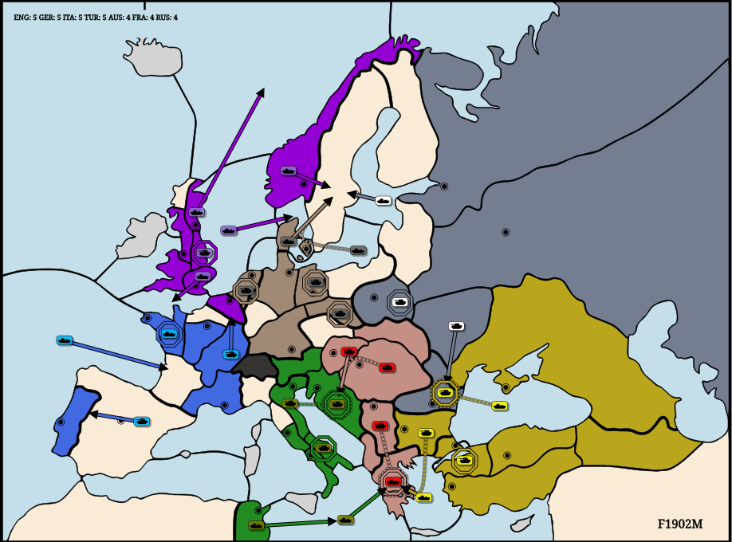
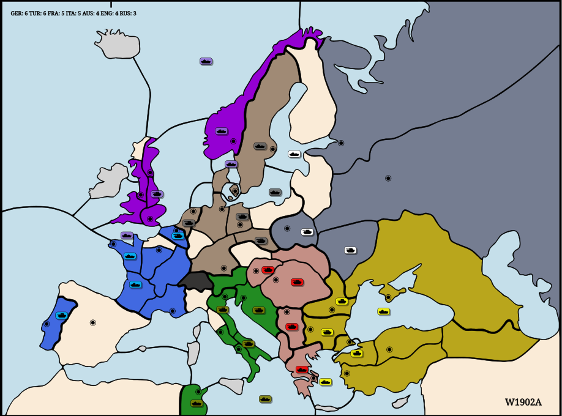

(F1902M)A VIE - TRI · A BUD S A VIE - TRI · A SER S F GRE · F GRE HF NWY - SWE · F NTH - SKA · F EDI - NWG · F LON - ENG · A YOR HA BUR - BEL · F BRE H · F MAO - GAS · A SPA - PORF DEN - SWE · F BAL S F DEN - SWE · A BER H · A SIL H · A HOL HA VEN S A TRI · A TRI H · F ION - GRE · A APU H · F TUN - IONA UKR - RUM · F BOT - SWE · A WAR HF AEG - GRE · A BUL S F AEG - GRE · F BLA S A RUM · A RUM H · A CON H
